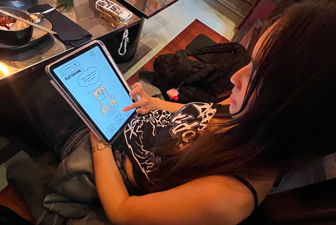
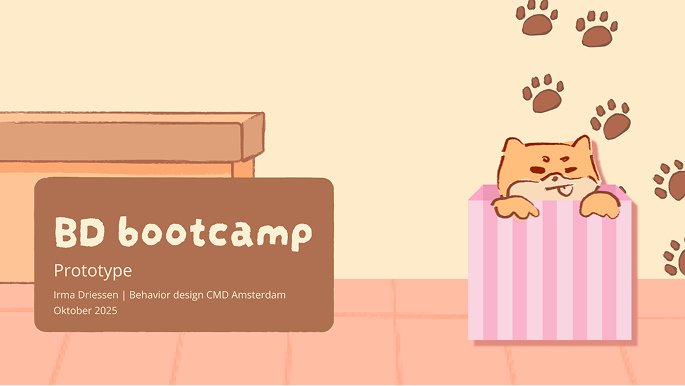
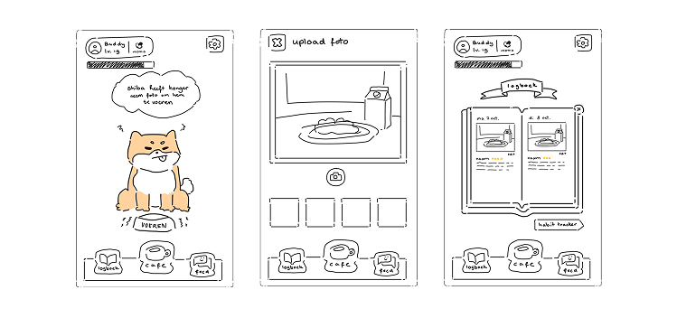
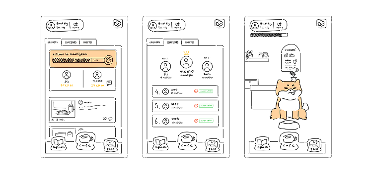
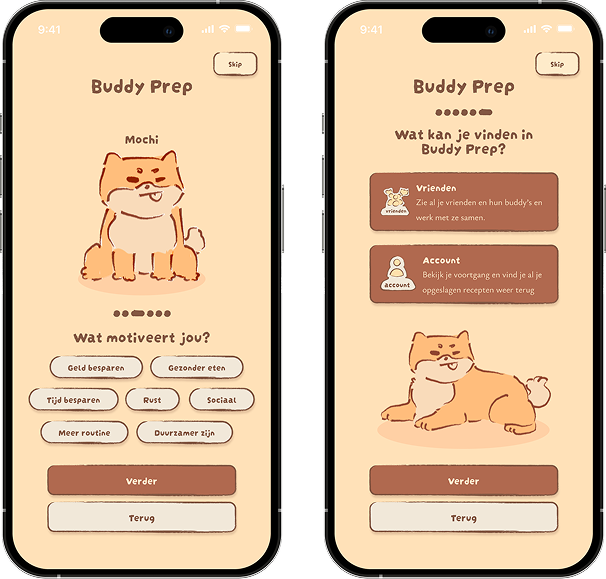
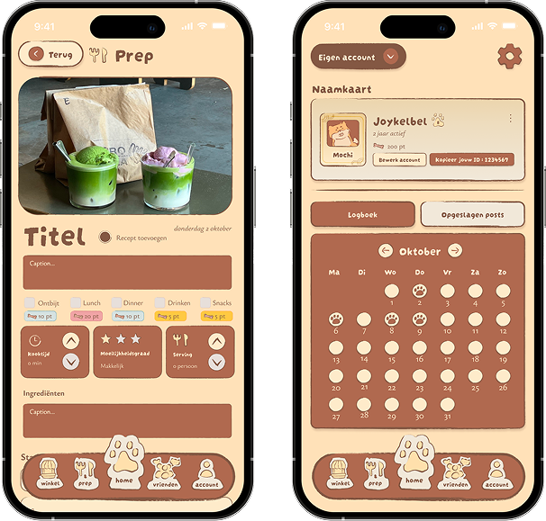
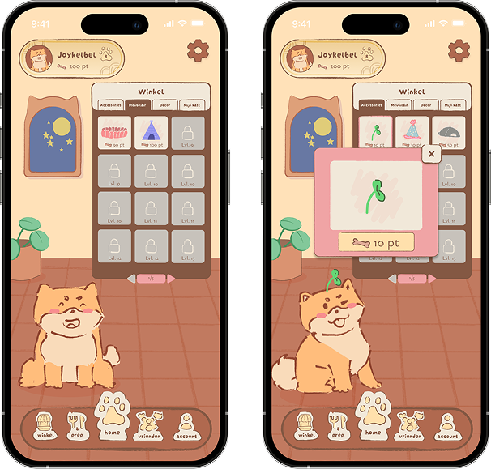
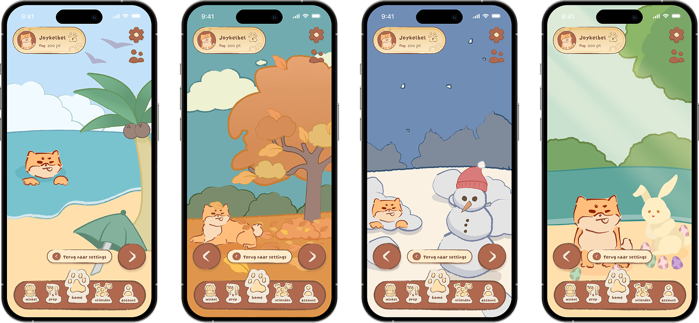

3 weeks
September - October 2025
UI/UX Designer
Figma
This was a 3 week project for my minor Behavior Design called 'Consuminder': The assignment focuses on designing an intervention that supports more sustainable behavior by encouraging repair, making, or production.
Human behavior and psychology are central to the project. Rather than designing for a broad target group, the focus is on designing for one specific individual using the SUE Behavorial Design Method.

This is Kimberley, the human we're focussing on this project, she's a 20 year old fashion student who has to commute at least 2 hours every day to school. Combined with long classes and travelling she doesn't have a lot of energy and time for food.
Her solution? Buying food on the go at the Albert Heijn To Go or other snackbars on the trainstation.
How can we help Kimberley, a student who often uses public transport (target group + specific moment), to avoid cravings, save money and make her morning calmer (job-to-be-done) by using a game to help her build a routine of preparing and taking food with her in advance (desired behaviour), so that it feels less like an effort (fear) and she stays because of rewards (comfort), instead of buying something 'on the go' for convenience (undesirable behaviour)?
Want to take a sneak peak already?


During the interview we heard from Kimberley that she works well with streaks for example tiktok streaks. She mentioned that she likes cute pets and raising them together with a friend.
We got inspired by the concept of tamagotchi's: raising a cute pet and making sure it gets fed and taken care of. We decided on a shiba, because it was her favourite animal and it gets fed when the user logs their meal in the app.


Buddy Prep is a gamified meal prep app designed to encourage sustainable eating habits.
Inspired by Tamagotchi, users raise a virtual Shiba by logging their own home-prepared meals — earning points to unlock accessories and rewards along the way. Designed using the SUE Behavioral Design Method turning a daily chore into a fun and rewarding routine.
The onboarding flow is the first thing a user sees when they open Buddy Prep for the first time. It'll ask them a couple of questions: What motivates you? When do you want to receive notifications?
During the onboarding you'll also receive a quick explaination on how the app works and what you can find!

To make your buddy happy, you need to feed him and how does that happen? By feeding yourself.
When you go to prep you can take a picture of your meal and select what type of meal it is: breakfast, lunch, dinner, snacks or a drink.
Afterwards you can find these back in your calendar on the account page and see your streak!

After you log a meal into the app you'll receive points based on the meal. You can exchange these points for accessories or furniture for your buddy and his room. You can't get all the items immediately yet... some items are locked and to unlock them you need to reach a certain level.

No problem! Send your buddy on holiday,
so you can take a break when needed with holiday mode.
